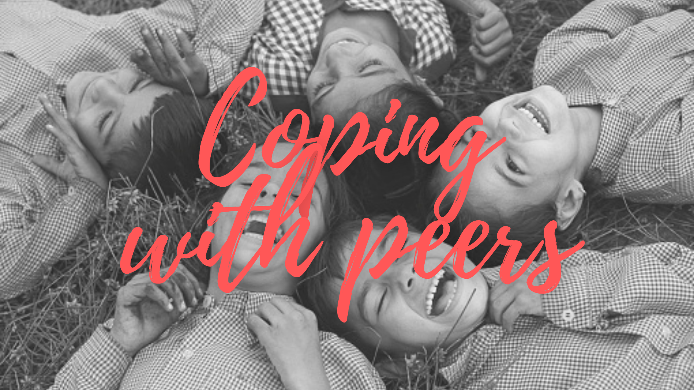
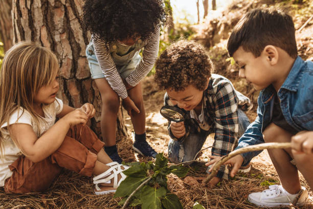

Importance of Peer relationships
Peer relationships in early childhood are essential to concurrent and future psychosocial adjustment. Experienced through group activities or one-on-one friendships, they play an important role in children’s development, helping them to master new social skills and become acquainted with the social norms and processes involved in interpersonal relationships.
Research points to the need to not only promote the development of critical social-emotional capacities, but also attend to and create positive peer processes to ensure that every child is able to engage in and benefit from healthy relationships at home, school, peer group, and community.
How to help children get along with their peers
Preschool programs can teach children valuable skills to help them get along with their peers. For example, they can show them how to play and communicate well with others, control feelings of aggression and solve problems that may arise in social situations. Specifically they can :
1. Teach social skills (through stories, pictures, puppets) and practice them (through role-plays and games). They can also teach children how to deal with various social situations (sharing a toy, taking turns, apologizing, etc.).
2. “Coach” young children on how to initiate play, ask questions and support their peers.
3. Reinforce positive interactions between children in the classroom and provide opportunities for play.

Helping children avoid abusive relationships
Abusive relationships, such as rejection and bullying, can have devastating effects on a child’s later social and emotional development and lead to chronic school adaptation issues.
With the support of caring adults, young children can acquire the main skills needed to avoid abusive relationships. They can learn to:
1. positively assert themselves
2. get protection from friendly peers
3. end uncomfortable relationships
To promote this important learning, parents and educators should encourage activities, contacts and interactions between same age children at home or elsewhere.
“Things are never quite as scary when you're surrounded by friends ”